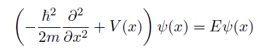

Este programa calcula las energías y funciones de onda que son soluciones del potencial introducido por el usuario. El programa resuelve la ecuación de Schrödinger :

siendo
V(x) el potencial introducido por el usuario.
El potencial usa como variables 'x' para el caso unidimensional, y 'r' para el caso tridimensional. El resto de símbolos se considerarán parámetros cuyo valor se pedirá al usuario. El potencial debe tener estados ligados para realizar el cálculo. Para más información puede consultar la sección de ayuda del potencial
Puntos de red – Define el número de puntos que se usarán para el cálculo. Al aumentar el número de puntos mejora la precisión de los resultados pero también se incrementa la duración del cálculo.
Momento angular – Para potenciales tridimensionales define las unidades de momento angular de la partícula
Salto de energía – Define el tamaño del paso mediante el cual se va recorriendo el intervalo de energías en el cual hay que buscar soluciones
Energía inicial – Define la energía a partir de la cual se comenzarán a buscar soluciones.
Energía final – Define la energía en la cual se detendrá la búsqueda de soluciones.
Número de soluciones – Determina el número máximo de soluciones
Para más información puede consultar la sección de ayuda de los parámetros
Una vez introducidos los parámetros y el potencial podemos calcular las soluciones. Los resultados se muestran en texto como lista de energías y gráficamente como soluciones de onda y espectro superpuesto al potencial. Las ondas solución pueden verse a mayor tamaño haciendo click sobre ellas
Para más información puede consultar la sección de ayuda de los resultados